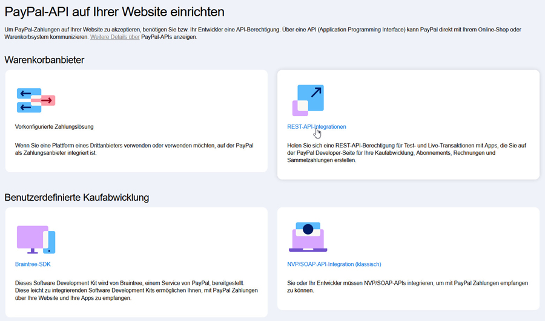

Dokumentation zum PayPal Checkout REST API Zahlungsmodul für die deutsche Zen Cart Version 1.5.7j

Alle Infos zur deutschen Zen Cart Version auf: www.zen-cart-pro.at
Weitere Module für die deutsche Zen Cart Version auf: downloads.zen-cart-pro.at
Sinn und Zweck
Mit diesem Modul wird Zahlung via PayPal Checkout über die neue PayPal REST API im Shop integriert.
Optional kann auch Kreditkartenzahlung via PayPal aktiviert werden, dazu ist für den Kunden kein PayPal Konto erforderlich
Dieses Modul löst das bisherige PayPal Express Modul (paypalwpp) der deutschen Zen Cart Version ab, da PayPal die alte von diesem Modul verwendete NVP/SOAP API abschalten wird.
Ein "Login mit PayPal" über einen PayPal Express Button im Warenkorb wird von diesem Modul nicht unterstützt, PayPal wird ganz normal wie andere Zahlungsarten auch bei der Auswahl der Zahlungsarten im Checkout angeboten.
Für die Bestellung wird als Lieferadresse die vom Kunden im Shop angegebene Lieferadresse übergeben, es gibt daher keine Notwendigkeit mehr, den Kunden nach der Rückleitung von PayPal erneut nach seiner Lieferadresse zu fragen wie das bisher vom paypalwpp Modul der deutschen Zen Cart Version gehandhabt wurde.
Dieses Modul unterstützt rein PayPal Wallet und Kreditkarte via PayPal.
Apple Pay, Google Pay oder andere Zahlungsarten sind nicht enthalten.
Voraussetzungen:
- Freigeschalteter PayPal Business Account
- Konfiguration der erforderlichen API Keys im PayPal Account (siehe Vorbereitungen)
- Zen Cart 1.5.7j deutsche Version
- Shop verwendet durchgehend https
- PHP mindestens 8.0.x, empfohlen 8.3.x
Features:
- Zahlungen können nur autorisiert oder sofort eingezogen werden.
- Zahlungen können bei Bedarf via Shopadministration rückerstattet werden (ähnlich wie bei der PayPal Express Integration)
- komplette Sandbox Unterstützung, so dass alles im Sandbox Modus getestet werden kann
- Direkte Kreditkartenzahlung via PayPal optional aktivierbar, ohne dass der Kunde dazu ein PayPal Konto haben muss.
- Standardmäßig wird bei Kreditkartenzahlung die Strong Customer Authentication (SCA) nur abgefragt, wenn sie für die jeweilige Zahlung vorgesehen ist. Optional kann für jede Kreditkartentransaktion 3D Secure erzwungen werden.
- Dieses Modul liefert ein geändertes paypalwpp Modul mit, so dass das alte paypalwpp Modul nicht deaktiviert oder deinstalliert werden muss. Es bekommt den neuen Status "Retired". Dadurch wird es im Shop für die Kunden nicht mehr angeboten. Bestellungen, die früher via paypalwpp erfolgt sind können aber weiterhin via Shopadministration zurückerstattet werden.
Copyright, Lizenz
Copyright
(c) 2024-2025 lat9 (vinosdefrutastropicales.com)
Übersetzung/Anpassung für die deutsche Zen Cart Version 1.5.7j:
(c) 2025 webchills (www.webchills.at)
Lizenz:
This contribution is subject to version 3.0 of the GPL license available through the world-wide-web at the following url:
http://www.zen-cart-pro.at/license/3_0.txt
Vorbereitungen bei PayPal
WICHTIG:
Das bisherige PayPal Modul paypalwpp hat die veraltete NVP/SOAP API verwendet. Das hat für den Zugang zu PayPal die folgenden drei Kennungen verwendet, die Sie auch in Ihrem Zen Cart paypalwpp Modul hinterlegt haben:
API Signatur - Username
API Signatur - Passwort
API Signatur - Signaturcode
Diese Zugangsdaten werden von der neuen REST API nicht verwendet, daher müssen Sie in Ihrem PayPal Konto neue Zugangsschlüssel für die REST API generieren!
Bitte beachten Sie auch, dass Ihr PayPal Account ein Business Account sein muss, damit Sie die neue API überhaupt verwenden können.
Bevor Sie dieses Modul installieren können, nehmen Sie also zunächst grundlegende wichtige Einstellungen in Ihrem PayPal Account vor.
Loggen Sie sich in Ihren PayPal Account ein.
Gehen Sie auf Kontoeinstellungen > Konto Zugriff > API Zugriff
Wählen Sie hier REST API Integrationen:

Sollten Sie noch nie Keys für die REST API erstellt haben, clicken Sie auf den Link zu developer.paypal.com
Oben rechts finden Sie Umschalter zwischen Sandbox und Live, die auch immer anzeigen, ob Sie sich im Livesystem oder Sandbox System befinden.
Um zwischen Sandbox und Live umzuschalten gehen Sie auf Apps & Credentials
Schalten Sie nun oben rechts auf Sandbox um und erstellen Sie Ihre App für die Sandbox.
Geben Sie der App einen beliebigen Namen, z.B. meinshop.de Sandbox
Nun werden Ihnen Client ID und Secret angezeigt, kopieren Sie sich diese beiden Schlüssel in eine Textdatei.
Schalten Sie nun auf Live um und erstellen wieder eine App für den Livebetrieb
Geben Sie der App einen beliebigen Namen, z.B. meinshop.de Live
Nun werden Ihnen Client ID und Secret angezeigt, kopieren Sie sich diese beiden Schlüssel in eine Textdatei.
Nun sind Sie in Ihrem PayPal Account fertig und sollten nun Folgendes zur Hand haben:
Eine Textdatei mit:
Client ID für Sandbox
Secret für Sandbox
Client ID für Live
Secret für Live
Nun können Sie das Modul in Ihrem Shop wie unter Installation beschrieben installieren.
Installation
Voraussetzungen
Dieses Modul ist nur für Zen Cart 1.5.7j deutsch geeignet.
Stellen Sie sicher, dass Sie Ihren Shop auf 1.5.7j aktualisiert haben, bevor Sie dieses Modul installieren!
Der Shop muss durchgehend https verwenden.
WICHTIG:
Für den Einbau dieses Moduls sollten Sie über folgende Werkzeuge verfügen:
1) Ein guter Texteditor.
Damit ist nicht das in Windows enthaltene Notepad oder Microsoft Word gemeint.
Sie benötigen einen Texteditor, der utf-8 versteht und auch im Format utf-8 ohne BOM abspeichern kann.
Meine Empfehlung: UltraEdit (kostenlose 30 Tage Testversion verfügbar)
Ebenfalls gut geeignet ist der kostenlose Texteditor Notepad++
2) Ein Tool zum Vergleichen von Dateien
Bei der Installation dieses Moduls ist es erforderlich, dass Sie den Inhalt einiger Ihrer bestehenden Zen Cart Dateien mit dem Inhalt der neuen Moduldateien vergleichen und die Änderungen zusammenführen ("mergen").
Meine Empfehlung: BeyondCompare (kostenlose 30 Tage Testversion verfügbar)
Ebenfalls gut geeignet ist das kostenlose Programm WinMerge
Empfehlung:
Dieses Modul erst in einem Testsystem einbauen und dort konfigurieren/testen und endgültig an die eigenen Wünsche anpassen. Erst dann in einem Liveshop einsetzen! Sichern Sie unbedingt alle Dateien Ihres Shops per FTP und sichern Sie die Datenbank mit phpMyAdmin oder anderen geeigneten Tools!
WICHTIG
Vor dem Einbau dieser Änderungen:
BACKUP von Shop und Datenbank machen!
Keine Haftung, Verwendung auf eigene Gefahr!
BACKUP gemacht? Ok, dann weiterlesen...
Die Installation erfolgt in folgenden Schritten. Halten Sie diesen Ablauf ein!
1)
Alle Dateien/Ordner im Ordner NEUE DATEIEN in der vorgegebenen Struktur in Ihr Shopverzeichnis hochladen. Dadurch werden keine bestehenden Dateien überschrieben.
2)
Bevor Sie das Modul installieren, ändern Sie nun erst das bestehende paypalwpp PayPal Express Modul in Ihrem Shop ab. Es ist nicht möglich beide Paypal Module gleichzeitig zu verwenden, daher muss das bestehende paypalwpp Modul für Shopbesucher deaktiviert werden!
Dazu gehen Sie nun in den Ordner GEAENDERTE DATEIEN.
Benennen Sie den Ordner DEINADMIN auf den Namen Ihres Adminverzeichnisses um.
In diesem Ordner finden Sie 2 Dateien:
paypal.php
includes/functions/admin_access.php
Es ist sehr unwahrscheinlich, dass Sie in Ihrem Shop jemals schon Änderungen in diesen beiden Dateien vorgenommen haben. Um sicher zu gehen, vergleichen Sie mit BeyondCompare oder WinMerge die beiden Dateien mit denen in Ihrem Shop.
Im Ordner includes finden Sie eine geänderte
includes/modules/payment/paypalwpp.php
Auch hier ist es unwahrscheinlich, dass Sie die schonmal geändert haben, aber auch hier empfiehlt sich ein Vergleich.
Alles geändert?
Dann laden Sie nun die Dateien/Ordner aus dem Ordner GEAENDERTE DATEIEN in der vorgegebenen Struktur ins Shopverzeichnis hoch und überschreiben die bestehenden Dateien damit.
3)
Loggen Sie sich nun in Ihre Shop Administration ein und gehen Sie auf Module > Zahlungsarten
Dadurch wurde das bestehende PayPal Express Modul paypalwpp im Hintergrund mit einer neuen Konfigurationsoption ausgestattet.
Markieren Sie das PayPal Express Modul paypalwpp und clicken Sie auf Bearbeiten.
Stellen Sie bei PayPal Express aktivieren? Wollen Sie Zahlung per PayPal Express aktivieren? um auf
Retired
Alles andere lassen Sie unverändert und bestätigen unten mit Aktualisieren.
Dadurch wird das alte Zahlungsmodul nicht vollständig deaktiviert, sondern nur für die Shopbesucher im Frontend. Damit können Sie nun auch weiterhin noch ältere Bestellungen, die mit dem alten Paypal Modul getätigt wurden via Shopadministration rückerstatten.
Wichtig:
Lassen Sie das alte paypalwpp Modul immer auf dem Status Retired!
Nicht deaktivieren und nicht deinstallieren!
4)
Nun können Sie das neue Modul PayPal Checkout (RESTful) paypalr unter Module Zahlungsarten installieren. Markieren Sie das Modul und clicken Sie auf installieren. Dann stellen Sie das Modul nach Ihren Wünschen ein, alle Einstellungsmöglichkeiten sind dort erklärt.
5)
Schalten Sie nun den Wartungsmodus wieder aus und testen Sie die Funktionalität.
Achten Sie darauf, dass Sie aus Ihrem PayPal Account ausgeloggt sind, falls Sie die PayPal Funktionalität im selben Browser testen wollen!
WICHTIG
Falls Sie bisher im Shop paypalwpp verwendet haben, dann wird möglicherweise auf der Login Seiet Ihres Shops noch immer Login mit PayPal angezeigt.
Falls Login mit PayPal noch immer erscheint, prüfen Sie folgende Datei in Ihrem Shop:
includes/templates/DEINTEMPLATE/templates/tpl_login_default.php
Entfernen Sie falls vorhanden den folgenden Abschnitt komplett:
tbd
Verwendung
BESTELLABLAUF IM FRONTEND
tbd
ANPASSUNGSMÖGLICHKEITEN
Farbe des Paypal Logos
Standardmäßig wird ein gelbes PayPal Logo angezeigt:
Alternativ sind auch weiß, grau oder blau möglich:

Wenn Sie eine andere Farbe verwenden wollen, können Sie das in folgender Datei ändern:
includes/languages/german/modules/payment/paypalr.php
Zeile 133:
define('MODULE_PAYMENT_PAYPALR_BUTTON_COLOR', 'YELLOW');
Ändern Sie von YELLOW auf WHITE, GREY oder BLUE
Download
Dieses Modul steht kostenlos auf Github zum Download bereit.
Aktuelle Version: 1.1.1 vom 24.06.2025:
Der Downloadbutton liefert immer direkt von Github das .zip Archiv der neuesten Version.
Ältere Versionen sind auf Github unter Releases archiviert:
https://github.com/zencartpro/157-modul-paypalr/releases
Wenn Sie von der Github Website downloaden, dann laden Sie bitte ausschließlich Releases herunter (zip unter Assets). In den Repositories findet Entwicklung statt, wenn Sie ein Repository (über den grünen Code Button) herunterladen, dann kann das Fehler enthalten bzw. noch eine reine Entwicklungsversion sein. Daher freigegebene getestete Versionen für den Einsatz in Livesystemen ausschließlich unter Releases herunterladen oder über den Downloadbutton oben. Um unter Windows Einschränkungen bei langen Dateinamen zu vermeiden, entpacken Sie das .zip mit einem echten unzip Programm wie z.B. 7-zip oder WinRAR
Changelog
Version 1.1.1 - 2025-06-13
- Initial Release